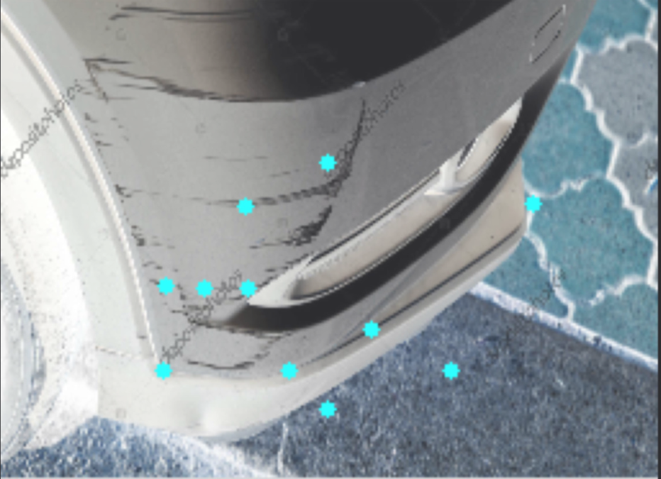
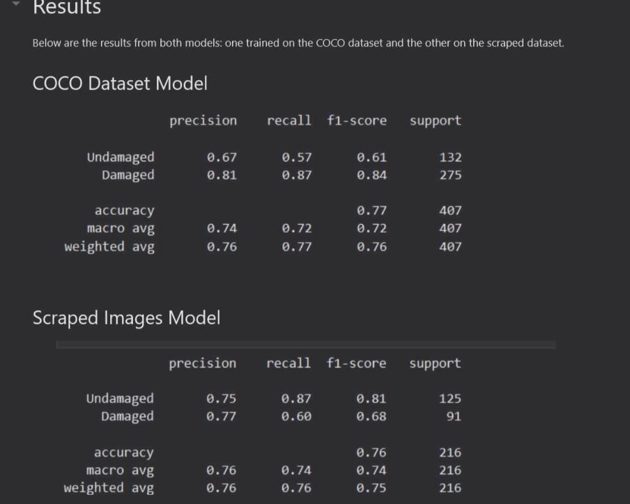

In this project, I built a computer vision system that detects and localizes dents, scratches, and other small types of car damage from vehicle images. The idea came from real problems in collision repair, where documenting damage during intake can take time and small defects are easy to miss. To address this, I created a machine learning pipeline that helps identify visible damage automatically and highlight damaged areas in the image.

The model uses ORB feature extraction, Bag of Visual Words, KMeans clustering, and an SVM classifier. I also implemented a patch-based localization approach to scan different regions of the image and mark where damage is likely present. This project allowed me to apply computer vision and machine learning to a real-world problem connected to my experience in the auto body industry.